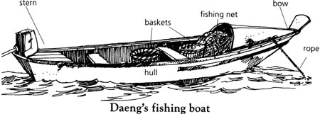
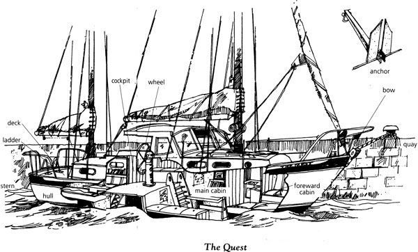

Listen to Part 1:
Đây là một câu chuyện phiêu lưu diễn ra tại Thái Lan ở Đông Nam Á. Phía nam Thái Lan là vùng biển xanh tuyệt đẹp của Vịnh Thái Lan.
Một số nhân vật trong câu chuyện sống và làm việc trên thuyền. Những bức ảnh này sẽ giúp bạn hình dung.

